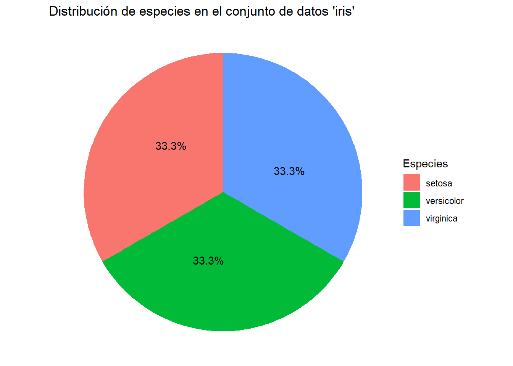

# Instalación de hbrthemes
#install.packages("hrbrthemes")
# Instalación de ggthemes
#install.packages("ggthemes")
#install.packages("plotly")
library(ggthemes)
library(hrbrthemes)
library(tidyverse)
library(plotly)
library(DT)
library(scales)
library(ggplot2)Tarea 2: Graficación con ggplot y quarto
Elaborado por: Mariana Morales Morales
Fecha de entrega: 31 de octubre de 2024
En el siguiente documento se realizará una serie de gráficos para analizar 3 dataframes obtenidos por medio de R, además se generarán los archivos correspondientes para poder generar una página web por medio de github, lenguaje de markdown y quarto.
Carga de bibliotecas
Aquí se cargan las bibliotecas y se pone en comentario una forma de cargar algunas librerías.
Carga de datos
En esta sección se realiza la carga de datos correspondiente de todos los dataframes que serán utilizados.
data("pressure")
data("iris")
data("quakes")Creación de Gráficos
En la siguiente sección se mostrarán los códigos utilizados para realizar los diferentes gráficos con ayuda de algunas librerías importantes.
Gráfico de Dispersión
# Gráfico de dispersión de PIB per cápita vs esperanza de vida al nacer
grafico_ggplot2 <-
pressure |>
ggplot(aes(x = temperature, y = pressure)) +
geom_point(aes(
# datos que se muestran al colocar el ratón sobre un punto
text = paste0(
"Temperatura: ", temperature, "\n",
"Presión: ", pressure
)
)) +
#scale_x_continuous(labels = comma, limits = c(0, NA)) +
#scale_y_continuous(labels = comma, limits = c(50, 90)) +
ggtitle("Relación entre la temperatura y la presión de vapor del mercurio") +
xlab("Temperatura (°C)") +
ylab("Presion (mm Hg)") +
labs(caption = "Fuente: Weast, R. C., ed. (1973) Handbook of Chemistry and Physics. CRC Press.l",
color = "Continente") +
labs(color = "Población estimada") +
theme_ipsum() + # estilo de hrbrthemes
theme(
plot.title = element_text(hjust = 0.5, size = 16),
axis.title.x = element_text(size = 14), # Tamaño de etiqueta del eje x
axis.title.y = element_text(size = 14), # Tamaño de etiqueta del eje y
axis.text = element_text(size = 12)) # Tamaño del texto de los ejes)
# Gráfico plotly
ggplotly(grafico_ggplot2, tooltip = "text") |>
config(locale = 'es') # para mostrar los controles en españolComentario: En este gráfico se puede observar que existe una correlación entre las variables de temperatura y presión del mercurio, esto es explicado debido a que a medida que la temperatura aumenta las moléculas de mercurio ganan una mayor energía cinética y por lo tanto habrá mayor presión porque puede darse un cambio de fase donde pase a fase gaseosa. Durante los cambios de fase es usual observar este comportamiento no lineal que depende de los puntos de fusión y ebullición de las sustancias.
Otro caso interesante es el gráfico de dispersión de la presión y la tempratura del agua, con el cuál además podemos ubicar el punto triple del agua que es importante en muchos procesos que ocurren día a día como por ejemplo la formación de las nubes. En la siguiente imagen se puede observar dicho gráfico de dispersión:

Gráfico de Barras
# Gráfico de barras con conteo de países por región de la ONU
grafico_barras_ggplot2 <-
iris |>
ggplot(aes(x = fct_infreq(Species), fill = Species)) + #fct_infreq= ORDENA LAS BARRAS DE MAYOR A MENOR, fct_inrev(fct_infreq()) las acomoda al reves
geom_bar(
aes(
text = paste0(
"Cantidad de especies: ", after_stat(count)
)
)
) +
ggtitle("Cantidad de plantas por especie en el estudio \n Edgar Anderson's Iris DataU") +
xlab("Especies") +
ylab("Cantidad de plantas") +
labs(caption = "Fuente: Fisher, R. A. (1936) The use of multiple measurements in taxonomic problems. Annals of Eugenics, 7, Part II, 179–188.") +
theme_ipsum() +
theme(
plot.title = element_text(hjust = 0.5, size = 16),
axis.title.x = element_text(size = 14), # Tamaño de etiqueta del eje x
axis.title.y = element_text(size = 14), # Tamaño de etiqueta del eje y
axis.text = element_text(size = 12)) # Tamaño del texto de los ejes
# Gráfico de barras plotly
ggplotly(grafico_barras_ggplot2, tooltip = "text") |>
config(locale = 'es')Comentario: En este gráfico es más sencillo observar la cantidad de plantas por especie que por ejemplo en una tabla, al consultar la documentación efectivamente el estudio Edgar Anderson`s Iris Data contaba con 150 plantas en total y de esas 50 eran setosa, 50 versicolor y 50 virginica.
Gráfico de Pastel
# Agrupar y contar las especies
cantidad_especies <- iris |>
group_by(Species) |>
summarise(cantidad_total = n())
# Calcular porcentajes
cantidad_especies <- cantidad_especies |>
mutate(Porcentaje = round(cantidad_total / sum(cantidad_total) * 100, 1))
# Gráfico de pastel
grafico_pastel_ggplot2 <-
ggplot(cantidad_especies, aes(x = "", y = cantidad_total, fill = Species)) +
geom_bar(width = 1, stat = "identity") +
coord_polar(theta = "y") +
geom_text(
aes(label = paste0(Porcentaje, "%")),
color = "black",
position = position_stack(vjust = 0.6) # para ajustar la posición del texto en cada porción
) +
labs(title = "Distribución de especies en el conjunto de datos 'iris'",
x = NULL,
y = NULL,
fill = "Especies") +
theme_void()
# Despliegue del gráfico
grafico_pastel_ggplot2
Comentario: En comparación con el grafico anterior en este grafico igual observamos la cantidad de plantas por especie, pero es más sencillo observar la cantidad exacta en el gráfico de barras, si este no tuviera las etiquetas de los datos sería un poco más complicada su interpretación en caso de que los valores de cada sección fueran más pequeños.
Histograma
# Determinar el ancho de cada barra (rango / número de bins)
n_bins <- 8
break_width <- (max(quakes$mag) - min(quakes$mag)) / n_bins
breaks <- seq(min(quakes$mag), max(quakes$mag), by = break_width)
# Histograma ggplot2 de distribución de la magnitud de los terremotos
histograma_ggplot2 <-
quakes |>
ggplot(aes(x = mag)) +
geom_histogram(
aes(
fill = after_stat(x), # Colorear las barras según la magnitud
text = paste0(
"Magnitud: ", round(after_stat(x), 2), "\n",
"Frecuencia: ", after_stat(count)
)
),
bins = n_bins,
color = "black" # Borde de las barras en negro para resaltar
) +
scale_x_continuous(breaks = breaks) +
scale_fill_gradient(low = "#99CCFF", high = "#003366") + # Rango de colores personalizado
ggtitle("Distribución de la Magnitud de los terremotos en Fiji") +
xlab("Magnitud de los terremotos escala Richter") +
ylab("Frecuencia") +
labs(caption = "Fuente: Dr. John Woodhouse, Dept. of Geophysics, Harvard University.") +
theme_ipsum() +
theme(
legend.position = "none",
plot.title = element_text(hjust = 0.5, size = 16),
axis.title.x = element_text(size = 14), # Tamaño de etiqueta del eje x
axis.title.y = element_text(size = 14), # Tamaño de etiqueta del eje y
axis.text = element_text(size = 12)) # Ocultar leyenda de color si no es necesaria
# Histograma en plotly
ggplotly(histograma_ggplot2, tooltip = "text") |>
config(locale = 'es')Comentario: De acuerdo a la distribución presentada en este gráfico se muestra que la mayor frecuencia de terremotos ocurre con magnitudes bajas entre 4 y 4.3, las más altas se encuentran entre 4.3 y 4.6, luego de ahí continúa en disminución siendo los de 6 y 6.5 los más inusuales, a estos datos se les puede aplicar algunas herramientas estadísticas para saber con certeza el tipo de distribución al que pertenece.